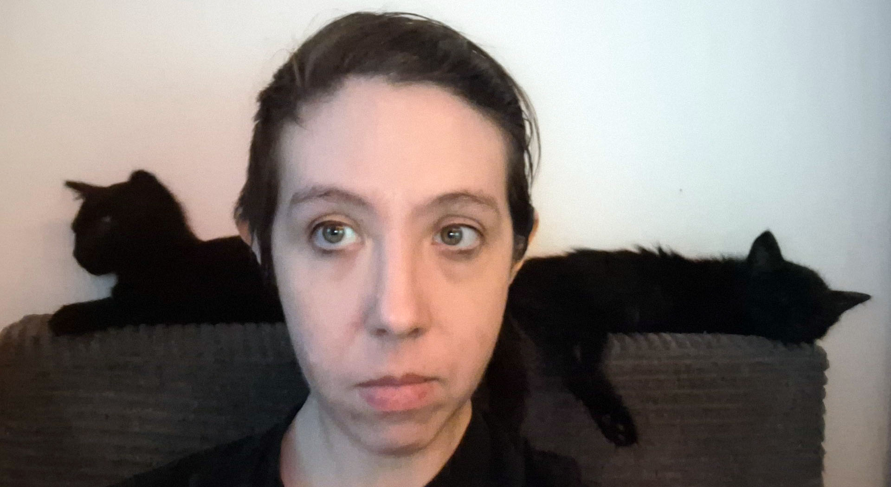

Thank you for considering me for your child's tutor! My name is Autumn Rogers and I offer tutoring services for high school level math and computer science.
I have an undergraduate degree in Computer Science from the University of Utah, and I worked as a professional software developer for around seven years, first doing C++ development and then JavaScript. I went to graduate school at California Institute of the Arts and received an MFA in Art and Technology, where my work focused on robotics and visual representations of chaos theory. After CalArts I began working as a computer science teacher at Westridge School in Pasadena, where I worked from 2021 to 2026. I earned my teaching credential from Moreland University in 2023. I'm currently pursuing an ME in Embedded and Cyber-physical Systems at UC Irvine.
While I'm happy to tutor anyone, as a former teacher at a girls school and a woman who loves math and coding, I especially like working with girls and trying to bring up their confidence around STEM. In my free time I foster kittens, so if your student is stressed about their classes, I always have kitten photos to lighten the mood!
Computer Science
I can tutor students in both AP computer science classes, having taught APCSP and worked extensively with Java. I'm comfortable tutoring students in most coding languages, including Java, JavaScript (including Node), C++, C#, and Python, as well as HTML/CSS.
I have special experience with physical computing; I've worked deeply with Arduino for ten years, including writing Arduino code, building circuits, and integrating Arduino output with other software (Node servers, DAWs for electronic music, Unity).
Math
I can tutor high school math through precalc, as well as higher levels if I'm given the materials in advance (while I went up through linear algebra in undergrad, that was a long time ago).
$175 per hour*
Minimum one hour
$200 per hour*
Minimum 30 minutes
I hate cars, and don't own one. As such, I'll reduce the total cost of any tutoring session by 20% if you come to me in DTLA (the Central Library would be perfect). If this doesn't work for you, I'll take 10% off if we can meet somewhere else that's convenient for me to get to via Metro -- if you're interested in this, let me know and we can figure something out.
Depending on distance of travel, my availability is:
Other days/times may be available by request.
(you have to click the button for this so it doesn't get scraped by spammers)